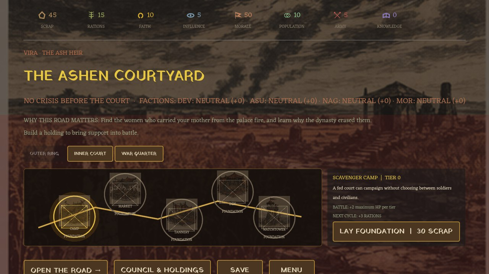

Game · Godot 4
Crown of Scars
A kingdom-building deck roguelike written in blood and ink.

About Crown of Scars
Build a reign from the ruins of a scarred world. Court the kingdom, marshal your cards in battle, and survive branching story events that remember every choice you make. 210 cards, five bosses that adapt to your playstyle, and a hand-crafted Scarred Ink art style. Built in Godot 4 for Windows.
Features
- 210-card deck with deep synergy between the four court factions
- Five hand-designed bosses that adapt to the way you fight
- Branching story events with memory — the world remembers you
- Hand-crafted Scarred Ink art style, built pixel by pixel
- Native Godot 4 engine with a Windows build
Godot 4
Windows
Deckbuilder
Roguelike
Crown of Scars is in development. Follow the work on the Astraiva homepage.